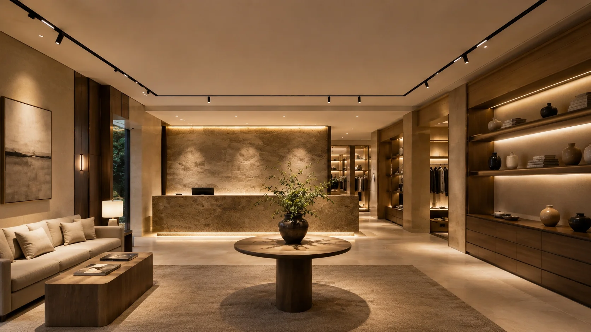
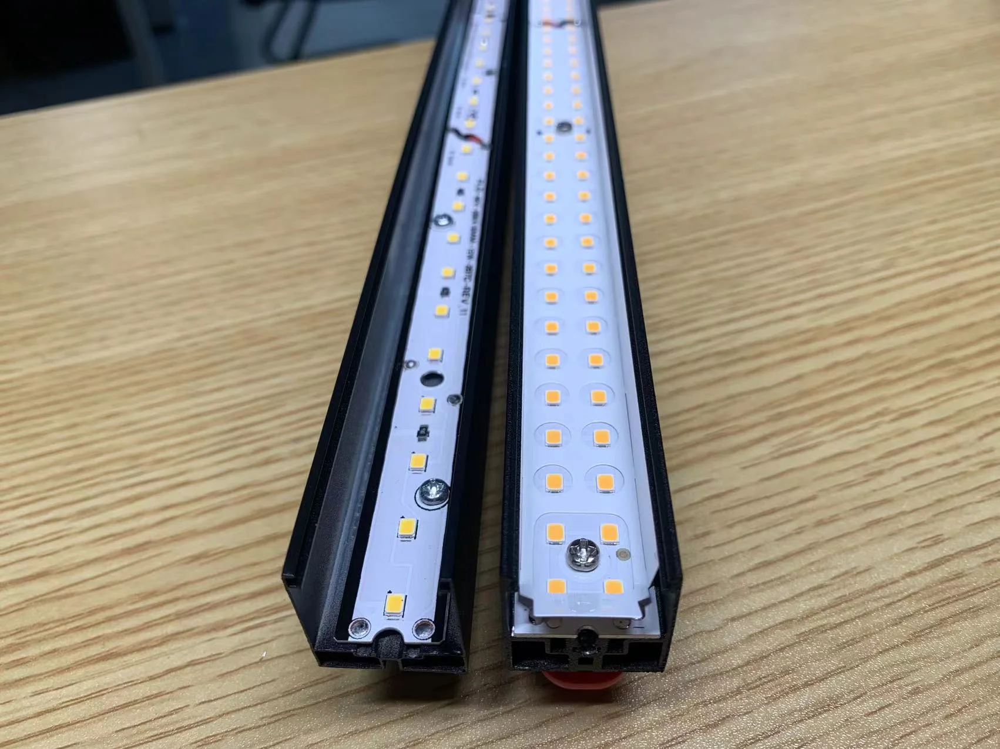
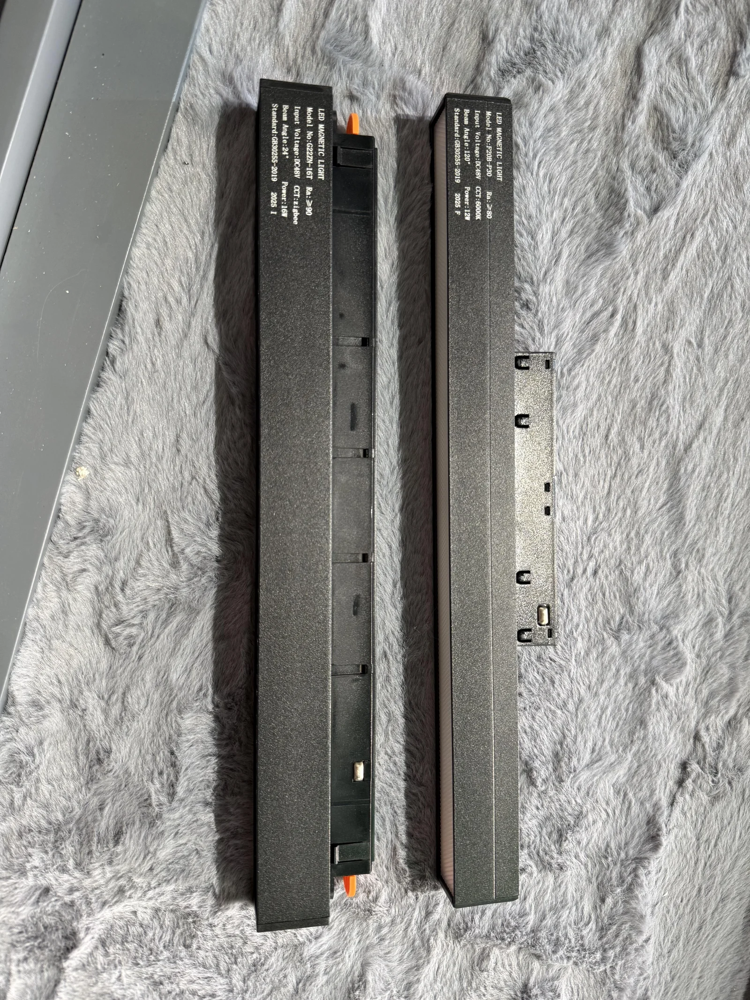

Before You Compare Prices, Check These 10 Engineering Details

Why two magnetic track lighting systems that look almost identical can perform completely differently — and how professional buyers evaluate quality before comparing prices.
A Buyer Asked Us a Simple Question
"Your price is about 20% higher than another supplier. Both products look almost the same. Why should I pay more?"
We hear this question often. And it is a reasonable question. Most magnetic track lighting systems share a similar appearance — a slim black track, minimalist luminaires, and similar advertised specifications: 48V, CRI > 80, 3000K/4000K/6000K. On paper, they seem almost identical.
A few months ago, one of our customers compared two 48V systems from different suppliers. The specifications looked nearly the same. The cheaper option was the obvious choice on paper.
Within 4 months of installation in a 48-unit retail project, 12 luminaires started flickering intermittently. Some linear modules showed visible light leakage at the end caps. Two spotlight modules no longer fit tightly on the track. Replacing the defective modules required reopening part of the ceiling — a cost that exceeded the original price difference several times over.
The customer initially believed these were isolated manufacturing defects. They weren't. Every issue could be traced back to engineering decisions made before production began — the same decisions that determined the price difference.
That experience is why this guide exists. It is not about choosing the most expensive option. It is about understanding which engineering details determine long-term quality — and which ones are invisible when you only compare prices.
What This Guide Will Help You Decide
If you are an importer, distributor, lighting designer, or project contractor, the information below will help you answer three questions before placing an order:
- Which quality details actually affect long-term project cost?
- How do I verify these details when evaluating samples?
- What should make me pause — or walk away — when a supplier cannot provide clear answers?
This is not a technical encyclopedia. It is a purchasing decision framework organized around the 10 most common mistakes buyers make when comparing magnetic track lighting systems.
📖 What You'll Learn in This Chapter
- Judging Quality by Appearance Instead of Structure
- Assuming Brightness Equals Quality
- Comparing LED Quantity Instead of LED Layout and PCB Quality
- Ignoring Optical Design Because "It's Just a Light"
- Thinking Stronger Magnets Always Mean Better Quality
- Overlooking the Most Common Failure Point: Electrical Contact
- Treating the Power Supply as an Accessory
- Asking "How Bright?" Instead of "Is It Comfortable?"
- Ignoring CRI and Color Consistency Across Fixtures
- Confusing Switchable CCT with True Dimming
The 10 Engineering Details That Professional Buyers Never Ignore
After evaluating hundreds of magnetic track lighting products and working with distributors, contractors, and project buyers across multiple markets, we have found that experienced buyers rarely focus on appearance alone. Instead, they evaluate these 10 engineering details:
- Structural Assembly & Light Leakage
- Heat Dissipation & Aluminum Housing Design
- LED Layout & PCB Quality
- Optical Components & Anti-glare Design
- Magnetic Fixing & Contact Area
- Electrical Contact Reliability
- Driver & Power Supply Quality
- Visual Comfort & UGR
- CRI & Color Consistency
- Dimming & System Compatibility
Each section below follows the same structure: the mistake → why it happens → how to verify → the project impact → and the warning signs that tell you whether to proceed or pause.
MISTAKE 1Judging Quality by Appearance Instead of Structure
Walk through a lighting exhibition and you will notice something: many magnetic track luminaires look remarkably similar. The housing shape, finish, and dimensions appear almost identical. Product photos make the differences even harder to spot.
But experienced buyers know that quality is determined by what you cannot see from the outside.
The housing of a magnetic track light is an assembly of multiple components: aluminum body, diffuser or lens, LED board, end caps, magnetic fixing components, and electrical contact assembly. These parts must fit together precisely. If manufacturing tolerances are poor, small gaps appear over time — and those gaps create bigger problems than most buyers expect.
Buyer's Decision
Before comparing prices, ask the supplier:
- Is the lamp body screw-fixed or clip-fixed?
- How is the end cap secured?
- What measures prevent light leakage from side gaps and end caps?
- Can you provide internal assembly photos before the diffuser is installed?
🚫 Red Flag
If the supplier cannot explain how the end cap is sealed, or if the housing uses clip-only assembly without screws, this is a strong indicator of low manufacturing precision. In projects where lights operate in temperature-varying environments (hotels with HVAC cycling, retail with high ceilings), clip-only assemblies develop visible light leakage and loose end caps within 6-12 months.

📊 Project Impact
- Light leakage — visible light escaping from side gaps and end caps, reducing the perceived quality of the entire installation
- Loose components — modules that no longer fit tightly, requiring replacement
- Higher rejection rate — in projects with strict quality standards, clip-assembled lights are more likely to be rejected during final inspection
- Replacement cost — fixing structural issues after installation typically costs 3-5× the component price difference
Assuming Brightness Equals Quality
A brighter light often appears to be a better product. Many buyers compare lumens first. But brightness alone tells very little about long-term performance.
A magnetic track light may deliver excellent brightness on day one while having poor thermal management. Six months later, the same luminaire may lose 20-30% of its initial output — a change that happens so gradually that many buyers do not notice until a side-by-side comparison reveals the gap.
LEDs do not fail because they are switched on. They fail because they operate at excessive temperatures for extended periods. At a housing temperature of 65°C, LED lifespan drops from a rated 50,000 hours to approximately 20,000 hours — a 60% reduction.
Aluminum thickness is only one piece of the story
Many suppliers advertise thicker aluminum. While housing weight matters, professionals evaluate the entire thermal system: housing weight, heat transfer path from LED board to housing, whether the PCB is aluminum-core (thermal conductivity) or standard FR4 (poor conductivity), and surface temperature under continuous operation.
Buyer's Decision
When evaluating thermal design, ask:
- What is the luminaire weight? (Compare similar-sized modules)
- What is the surface temperature after 4 hours of continuous operation?
- Is the LED board aluminum-based or FR4?
- Do you have temperature rise test data?
⚠️ Warning Zone
If the supplier quotes aluminum thickness but cannot provide temperature test data, consider this a yellow flag. For commercial projects operating 10-16 hours daily, thermal performance is directly tied to replacement cycles and warranty claims. A 1.2mm housing that runs cool may outperform a 2.0mm housing with poor thermal path design.
📊 Project Impact
- Lumen depreciation — visible brightness loss within the first year of operation
- Color shift — LEDs operating at high temperatures shift in color temperature over time
- Driver stress — heat shortens driver lifespan, causing system failure
- Warranty claims — inconsistent performance between luminaires leads to more service calls
Comparing LED Quantity Instead of LED Layout and PCB Quality
More LEDs do not automatically mean better quality. In fact, some suppliers crowd LEDs onto a narrow strip to create the appearance of higher brightness, while ignoring the optical and thermal consequences.
Professional buyers look at the complete LED system: brand, layout (single-row or double-row), spacing, PCB material, and soldering quality. For linear flood modules above 10W, a double-row design with aluminum PCB is a strong indicator of better engineering consideration. Single-row layouts pushed to high wattage on FR4 PCBs create hot spots, uneven light distribution, and accelerated LED aging.
Buyer's Decision
When evaluating the LED system, ask:
- Is the LED layout single-row or double-row?
- What LED brand is used? (Osram, Bridgelux, Sanan, or generic)
- Is the PCB aluminum-based or standard FR4?
- Can you show the lighting effect after the diffuser is installed?
🚫 Red Flag
Single-row LED layout on FR4 PCB in a module rated above 10W is a design compromise. In retail or hospitality projects where uniform light distribution is required, this combination consistently produces visible hot spots and accelerated lumen depreciation within the first year.

📊 Project Impact
- Uneven light distribution — visible bright spots and dark edges
- Color inconsistency — LEDs from different bins or different brands produce visible color variation across the installation
- Reduced lifetime — FR4 PCBs conduct heat poorly, accelerating LED degradation
Ignoring Optical Design Because "It's Just a Light"
Good magnetic track lighting is not only bright. It must distribute light properly. The optical system — diffuser, reflector, lens — determines how efficiently light reaches the target surface and whether the result looks professional or amateur.
For each module type, the critical checks differ:
- Flood/linear modules: Check for reflector film or reflective cavity behind the LEDs. Without it, a significant portion of light is trapped inside the housing. Also check diffuser clarity — PC (polycarbonate) is impact-resistant but may yellow; PMMA (acrylic) offers better clarity but is more brittle.
- Grille/anti-glare modules: Deeper louvers provide better glare control. Check the louver depth and whether it has a black cavity design to reduce reflected glare.
- Spotlight modules: Check for clean beam edge, no secondary light spots, accurate beam angle, and stable adjustment structure.
Buyer's Decision
- Does the linear flood light use reflector film or reflective design?
- Is the diffuser PC or PMMA?
- Does the grille light have anti-glare design?
- Is the spotlight beam clean and free of secondary spots?
⚠️ Warning Zone
If a flood/linear module labeled at 15W or higher has no reflective material inside, expect 15-25% lower effective light output than the LED rating suggests. The light is being produced but trapped inside the housing.
📊 Project Impact
- Wasted light output — lower efficiency means you need more fixtures for the same illumination level
- Unprofessional appearance — visible LED dots, uneven beams, or glare in hospitality and retail spaces
- Client dissatisfaction — poor beam quality is immediately noticeable to end users
Thinking Stronger Magnets Always Mean Better Quality
Magnetic force is important, but stronger is not always better. The goal is balance — enough holding force for secure installation without making removal difficult or damaging the track surface.
A well-designed magnetic system considers: magnet count and distribution, contact surface area, mechanical safety lock for vertical installation, and matching between lamp weight and magnetic strength. Overly strong magnets can scratch the track surface and make installation adjustments frustrating for electricians.
Buyer's Decision
- How many magnets are used in each module?
- What is the magnetic contact area?
- Is there a safety buckle or mechanical lock for vertical installation?
- Does the module installation feel stable or loose when mounted?
🚫 Red Flag
If a module longer than 300mm uses only a single magnet or the magnetic hold feels weak when mounted, this is a safety concern for ceiling installations. In vertical wall installations, the absence of a secondary mechanical lock is a red flag.
📊 Project Impact
- Safety risk — modules may loosen or fall over time, especially in areas with vibration (doors, heavy traffic)
- Poor user experience — electricians and end users notice loose-fitting modules immediately
- Contact instability — weak magnetic hold affects electrical contact pressure, leading to intermittent flickering
Overlooking the Most Common Failure Point: Electrical Contact
The electrical connection between the track and the module is the most failure-prone area in magnetic track lighting systems — and the most commonly overlooked during sample evaluation.
Poor contact design leads to flickering, intermittent power loss, and heat buildup at connection points. In projects using unplated brass contacts, service calls related to flickering occur at approximately 3× the rate of gold-plated copper systems.
Key indicators of contact quality: contact pin material (copper vs brass vs steel), surface treatment (gold/nickel plating or none), spring-loaded mechanism for maintaining consistent pressure, and contact surface area.
Buyer's Decision
- What material are the conductive contacts?
- Is there nickel or gold plating for oxidation resistance?
- Are the contacts spring-loaded for consistent pressure?
- How many installation cycles can the contact maintain stable performance?
🚫 Red Flag
Unplated brass or steel contacts are a significant reliability risk in humid environments (coastal regions, bathrooms, indoor pools) or projects with frequent reconfiguration. Oxidation builds up within months, causing intermittent contact and flickering that is difficult to diagnose without replacing the module.

📊 Project Impact
- Flickering — the most common complaint in installed magnetic track lighting projects
- Maintenance visits — each site revisit costs $100-300 in labor, often exceeding the module price
- Customer complaints — flickering lights erode trust in the entire lighting system
- Replacement costs — modules with oxidized contacts cannot be repaired, only replaced
Treating the Power Supply as an Accessory
Even though magnetic track lighting operates at 48V low voltage, the power supply (driver) remains the single most critical component for system reliability — and the most common point of failure.
A poor driver can cause: flickering, audible buzzing, unstable dimming, shortened LED lifespan, and even complete system failure. In commercial projects, running a driver at maximum capacity continuously accelerates failure. Industry practice recommends at least 20-30% power headroom above the total connected load.
Buyer's Decision
- Is the power supply 48V constant voltage?
- What brand driver is used? Is it certified (CE, EMC, UL)?
- Does it have overload, short-circuit, and over-temperature protection?
- Is it flicker-free?
- Does the dimming version require a different driver?
🚫 Red Flag
If the supplier cannot name the driver brand or provide certification documents, this is one of the highest-risk signals in the entire evaluation. An uncertified driver is the most likely component to fail within the first year, and the resulting damage may extend to the LED modules it powers.
📊 Project Impact
- System failure — driver failure disables all connected luminaires, not just one module
- Ceiling access cost — replacing a driver often requires ceiling work in installed projects
- Intermittent issues — poor driver output causes hard-to-diagnose flickering and dimming problems
Asking "How Bright?" Instead of "Is It Comfortable?"
For international B2B projects — especially hotels, villas, offices, and premium retail — visual comfort matters as much as brightness. A light that is uncomfortably bright creates glare, eye strain, and a negative impression of the space.
The professional measure of glare is UGR (Unified Glare Rating). UGR < 19 is the commercial standard for office and hospitality spaces. UGR < 16 is required for premium environments. Many budget magnetic track lights either do not provide UGR data or score above 22, which is considered visually uncomfortable.
Buyer's Decision
- Can the grille light achieve UGR < 19?
- Does the product use black cup anti-glare design?
- What beam angles are available?
- Can you provide real lighting effect photos in a typical installation?
⚠️ Warning Zone
If the supplier does not provide UGR test data for grille or spotlight modules, the product likely has not been tested. For hospitality and office projects where visual comfort is specified, this can lead to rejection during final inspection.
📊 Project Impact
- Occupant discomfort — glare causes eye strain and complaints in occupied spaces
- Project rejection — some projects specify UGR requirements in tender documents
- Lower perceived quality — uncomfortable lighting makes the entire space feel low-end
Ignoring CRI and Color Consistency Across Fixtures
CRI and color consistency directly affect how a space looks. Two lights with the same CRI rating can produce visibly different light quality when installed side by side. The difference is in color consistency — measured by SDCM (Standard Deviation of Color Matching).
For commercial and hospitality projects: Ra ≥ 90 with SDCM ≤ 3 is the professional minimum. Hotels that specify CRI Ra ≥ 90 with SDCM ≤ 3 typically report 70% fewer color-complaint callbacks compared to projects using non-binned LEDs. For retail, galleries, and premium residential, Ra ≥ 95 with SDCM ≤ 2 is preferred.
Buyer's Decision
- What is the actual CRI (not just claimed)?
- Can you guarantee SDCM ≤ 3?
- Are LEDs from the same bin for the entire order quantity?
- Can you provide CRI test reports for this specific model?
⚠️ Warning Zone
If the supplier claims "CRI > 80" without specifying an actual test value, or cannot confirm SDCM, color variation between fixtures is likely. In projects with multiple luminaires visible in the same space (hotel corridors, retail floors), this variation is immediately noticeable and difficult to fix without replacing all fixtures.
📊 Project Impact
- Color variation — visible difference between adjacent fixtures creates an unprofessional appearance
- Client complaints — color inconsistency is one of the top complaints in hospitality projects
- Difficult to fix — replacing a single mismatched fixture is rarely possible because LED bins change over time
Confusing Switchable CCT with True Dimming
One of the most common misunderstandings in magnetic track lighting procurement is the difference between "switchable CCT" and "dimmable." They are not the same thing.
Switchable CCT (three-color switching) changes the color temperature between fixed options (e.g., 3000K/4000K/6000K) but does not adjust brightness. This is the most basic option and is often incorrectly marketed as "dimmable" by less experienced suppliers.
True dimming adjusts brightness from 1-100%. Different control protocols (TRIAC, 0-10V, DALI, Tuya, Zigbee) require different drivers. Confirming compatibility early prevents costly rework.
Buyer's Decision
- Is this brightness-dimmable or three-color switching only?
- What control protocol does it support? (DALI, 0-10V, TRIAC, Tuya, Zigbee)
- Does the dimming version require a different driver or power supply?
- Is the dimming range 1-100% or limited (e.g., 10-100%)?
🚫 Red Flag
If a supplier lists "dimmable" in the specifications but cannot tell you which protocol (DALI, 0-10V, TRIAC), they are likely referring to three-color switching. In projects with smart control systems or DALI requirements, this miscommunication causes project delays and expensive driver replacements at the installation stage.
📊 Project Impact
- System incompatibility — wrong drivers ordered, requiring replacements before installation
- Project delays — sourcing compatible drivers adds 2-4 weeks to project timelines
- Unhappy end users — clients who specified "dimmable" receive lights that only switch color temperatures
Supplier Comparison: What Professional Suppliers Offer vs What Budget Suppliers Hide
When you apply these 10 checks, the differences between suppliers become clear. Here is a summary of what typically distinguishes a quality-focused supplier from a price-focused one:
| Check Point | Quality Supplier | Price-Focused Supplier |
|---|---|---|
| Housing assembly | Screw-fixed, tight seams, no flex | Clip-only, visible gaps, torsional flex |
| Light leakage | Completely sealed when lit | Light escapes from sides and end caps |
| LED layout | Double-row (linear modules), aluminum PCB | Single-row, standard FR4 PCB |
| Optical design | Reflective cavity + quality diffuser | Bare housing, thin diffuser |
| Heat dissipation | ≥2.0mm aluminum, temperature test data available | Thin aluminum, no thermal testing |
| Magnetic hold | Multiple magnets + mechanical safety lock | Single magnet, no secondary lock |
| Contact pins | Gold-plated copper, spring-loaded | Unplated brass, fixed contacts |
| Power supply | Branded driver, certified, 20-30% headroom | Generic driver, no certification, tight margins |
| CRI / color | Ra ≥ 90, SDCM ≤ 3, same bin throughout | Ra ≥ 80 claimed (actual lower), SDCM ≤ 5+ |
| Certifications | CE, RoHS, EMC — model-matched certificates | Generic or expired certificates |
Practical Buyer Checklist
Print this checklist. Keep it on your desk when evaluating samples.
- Visual and tactile inspection Check housing assembly — screw-fixed or clip-only? Check end cap fit. Twist test for torsional rigidity.
- Light leakage test Power on in a dim room. Inspect all seams, side gaps, and end caps for escaping light.
- Internal LED inspection Remove diffuser. Check single vs double row, PCB type (aluminum vs FR4), LED spacing.
- Optical component check Look for reflector film/reflective cavity. Check diffuser material (PC vs PMMA).
- Thermal test Run at full power for 30-60 minutes. Measure housing surface temperature. Compare weight of similar modules.
- Magnetic hold test Mount and remove multiple times. Test installation feel. Check for safety lock mechanism.
- Electrical contact inspection Identify contact pin material and surface treatment. Check spring mechanism. Look for signs of oxidation.
- Driver verification Check driver brand, output rating, certification marks. Ask about protection features.
- Color quality comparison Compare multiple samples at the same CCT. Check for visible color variation between units.
- Dimming and compatibility confirmation Confirm whether dimming is true brightness control or three-color switching. Check control protocol compatibility.
- Certification review Request PDF copies of all certifications. Verify model numbers match the actual product.
- Warranty terms Confirm warranty period, what is covered (module vs driver vs labor), and claim process.
Frequently Asked Questions
Before Comparing Prices, Understand What You Are Actually Paying For
Structure, contact stability, thermal reliability, and optical precision — these are the engineering details that determine whether your project runs smoothly or becomes a costly lesson.
Don't compare prices yet. Compare engineering quality first.
Not Sure How Your Current Shortlisted Suppliers Compare?
Send us your product requirements, project drawings, or supplier comparison notes. We can help you review the engineering quality of your shortlisted options before you commit to an order.
Request an Engineering Review →We help buyers judge magnetic track lighting quality — not just sell it.